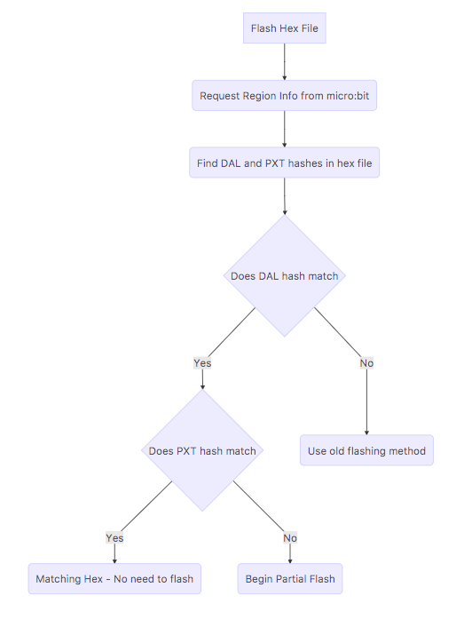

Partial Flashing Service¶
Introduction¶
The Partial Flashing Service allows a BLE client to connect to a micro:bit and read and write the information required to partially update the firmware (e.g. the MakeCode section of the flash).
This service exists in partnership with the DFU service that allows a client to fully flash the micro:bit.
Diagrams showing the flow of data during partial flashing can be found at the bottom of the document.
Bluetooth Service Specification¶
Please see the micro:bit Bluetooth profile specification.
Enabling the service¶
Currently partial flashing is only supported by programs built using MakeCode. This is because the service requires the user program to be appended onto the end of the DAL, something which can't be guaranteed in a C++ program. The partial flashing service is enabled by default for MakeCode programs.
Characteristic Commands¶
The service consists of a single Bluetooth GATT characteristic that responds to a client's WRITE WITHOUT RESPONSE request with a BLE Notification. The characteristic supports commands to: Read the REGION INFO i.e. request Memory Map information, WRITE DATA to the flash, inform the micro:bit that the sevice has reached END OF TRANSMISSION, obtain the MICROBIT STATUS (PFS version #, current m:b mode), and to RESET the micro:bit into either application (MakeCode) or BLE mode.
Region Info Command¶
The Region Info command is used to request information from the Memory Map. The client sends a WRITE WITHOUT RESPONSE command with the control byte (byte 0) set to 0x00 (Region Info) and byte 1 set to the region ID:
Client Write Request¶
| Byte 0 / Command | Byte 1 / Region # | |
|---|---|---|
| Read Soft Device | 0x00 | 0x00 |
| Read DAL | 0x00 | 0x01 |
| Read MakeCode | 0x00 | 0x02 |
micro:bit Response¶
The micro:bit looks up the relevant information and returns it using a BLE NOTIFICATION:
| Byte 0 | Byte 1 | Bytes [2,3,4,5] | Bytes [6,7,8,9] | Bytes [10,11,12,13,14,15,16,17] |
|---|---|---|---|---|
| READ_NOTIFICATION / 0x00 | Region # | Region Start Address | Region End Address | Hash |
Write Data Command¶
To send the new firmware and write it to the flash a WRITE_WITHOUT_RESPONSE command is used. These packets begin with the command byte (byte 0) set to 0x01. The packet is structured as follows:
Client Write Without Response¶
| 1 Byte | 2 Bytes | 1 Byte | 16 Bytes |
|---|---|---|---|
| COMMAND | OFFSET | PACKET# | DATA |
The micro:bit handles data in blocks of 4 packets. This allows the micro:bit to process a 64 byte buffer and ensure that it can be successfully processed.
The offset from the first packet in the block is stored whilst waiting for the remaining 3 packets. Once all 4 packets have been received the block of 4 is written to the flash at the offset specified by the packet and a notification is sent to the client to request the next block of packets.
The offset used is the address bytes of the current record in the hex file e.g.: :10__0100__00214601360121470136007EFE09D2190140
micro:bit Response¶
Successful Write:
| Byte 0 | Byte 1 |
|---|---|
| WRITE_NOTIFICATION / 0x01 | 0xFF |
Out Of Order Packet If the micro:bit detects an out of order packet the packet count is set to the end of the block (start of block + 3, ready for the next) and a notification is sent to inform the client. The client needs to update the packet # to the start of the next block - add 4 to the start of the block (block packet counts always start with a multiple of 4: 0, 4, 8, 12..).
| Byte 0 | Byte 1 |
|---|---|
| WRITE NOTIFICATION / 0x01 | 0xAA |
End Of Transmission¶
When the start of the embedded source is reached a WRITE_WITHOUT_RESPONSE request is issued with a payload of 0x02. The micro:bit removes the embedded source magic to prevent confusion with the new application, and resets the micro:bit into application mode.
| Byte 0 |
|---|
| END_OF_TX / 0x02 |
MICROBIT STATUS¶
A client can fetch the version of the Partial Flashing Service and the micro:bit's current status using the MICROBIT STATUS command.
| Byte 0 |
|---|
| MICROBIT STATUS / 0xEE |
The micro:bit responds with a notification. Partial Flashing Version, currently returns 1 for the intial release. Current mode returns: 0x00 for Pairing Mode, 0x01 for Application Mode.
| Byte 0 | Byte 1 | Byte 2 |
|---|---|---|
| MICROBIT STATUS / 0xEE | Partial Flashing Version | Current Mode |
MICROBIT RESET¶
The Partial Flashing Service also allows a client to reset a micro:bit into either Application or Bluetooth Pairing Mode.
Reset Type: 0x00 for Pairing Mode, 0x01 for Application Mode
| Byte 0 | Byte 1 |
|---|---|
| MICROBIT RESET / 0xFF | Reset Mode |
UUIDs¶
const uint8_t MicroBitPartialFlashServiceUUID[] = {
0xe9,0x7d,0xd9,0x1d,0x25,0x1d,0x47,0x0a,0xa0,0x62,0xfa,0x19,0x22,0xdf,0xa9,0xa8
};
const uint8_t MicroBitPartialFlashServiceCharacteristicUUID[] = {
0xe9,0x7d,0x3b,0x10,0x25,0x1d,0x47,0x0a,0xa0,0x62,0xfa,0x19,0x22,0xdf,0xa9,0xa8
};
Partial Flashing Client¶
Example Client for Android¶
Please see an example implementation on GitHub.
Client Process¶
A client completing the partial flashing process will first need to read the Memory Map from the micro:bit to obtain the region hashes.
Once the hashes have been obtained from the micro:bit they need to be compared with the hashes found within the new hex file to determine if it is possible to partially flash the micro:bit. Partial flashing requires the micro:bit to be using a matching version of the DAL. The hashes within the file can be found in the 16 bytes following the 'magic number' 708E3B92C615A841C49866C975EE5197 found in the file.
Defined here:
; start
.startaddr 0x30000
.hex 708E3B92C615A841C49866C975EE5197 ; magic number
.hex 0662709FA0315567 ; hex template hash
.hex EDE9690A1093AE71 ; program hash
.short 11 ; num. globals
.short 0 ; patched with number of words resulting from assembly
.word 0 ; reserved
.word 0 ; reserved
.word 0 ; reserved

If partial flashing is possible the micro:bit needs to be in BLE mode to prevent the flashing process from interfering with instructions that are executing. This is done by sending a MICROBIT_RESET command with 0x00 as the payload. The client then transfers the hex data from the file starting at the 'magic number' up until the page that contains the embedded source - also found using a magic number 41140E2FB82FA2BB.
Once the embedded source is found the client sends an END OF TRANSMISSION BLE write to inform the micro:bit the transfer is over.

Martin's Step by Step on iOS¶
(1) Check the hex file for the magic (remember the file hash)
(2) Request DAL region
(3) Check DAL hash against stored hash - fail if different
(4) Request MakeCode region
(5) Calculate base address = start_address - start_address % 0x10000;
(6) Request STATUS
(7) If mode is application request reboot to pairing mode; try to reconnect; goto 2)
(8) If mode is pairing send first batch of 4 FLASH packets
(9) Send next 4 flash packets. Repeat until complete.
(10) Send end of transmission